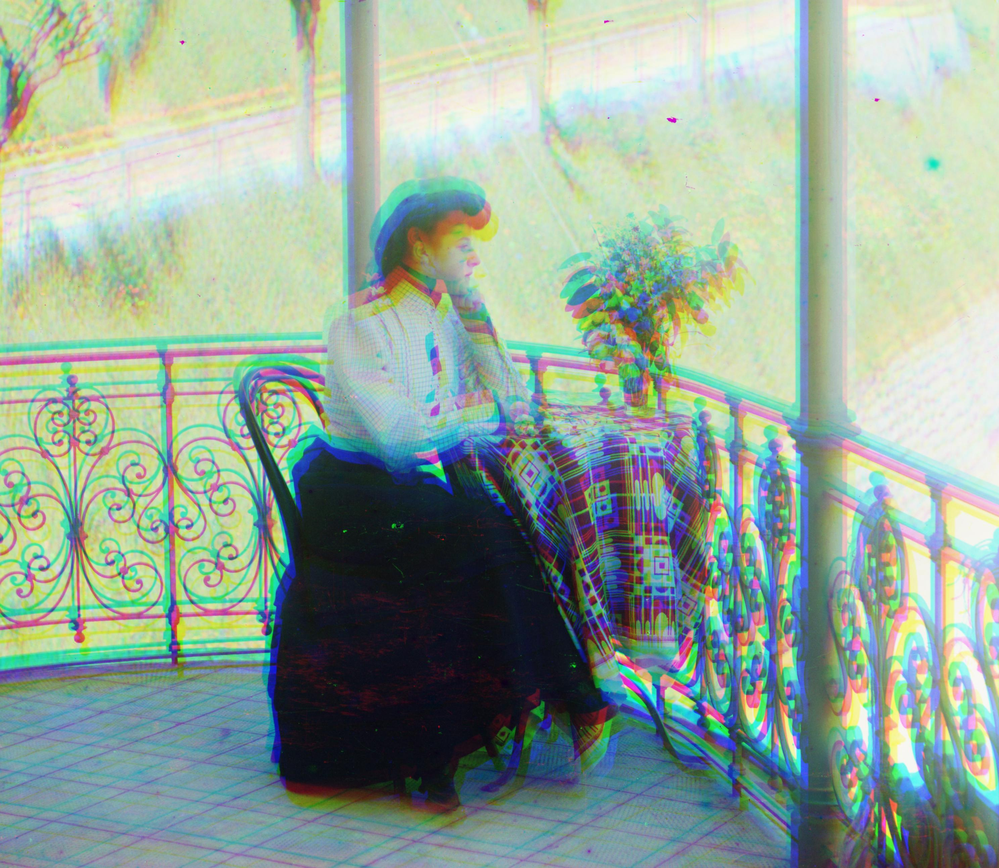
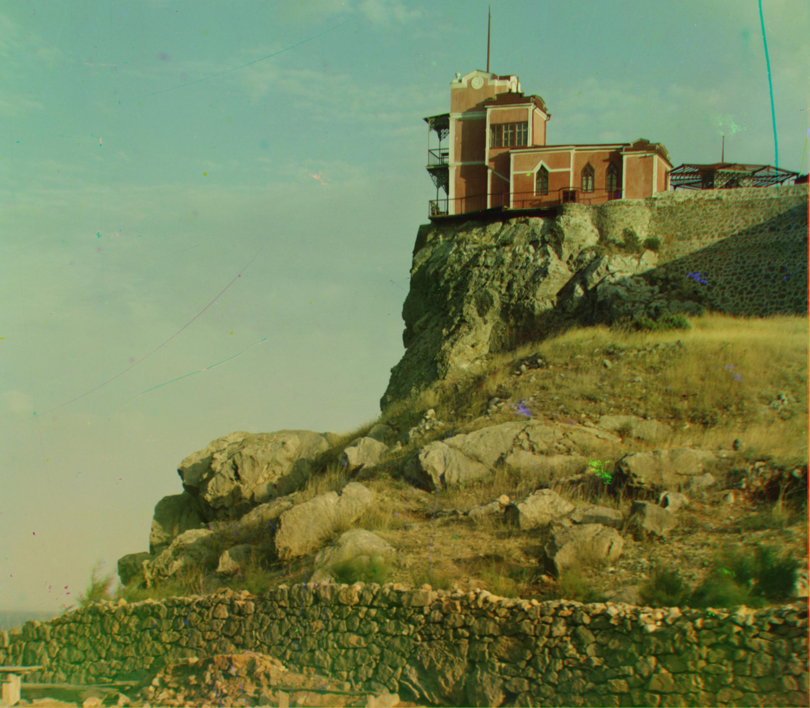
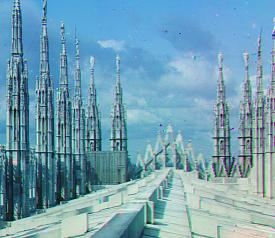

Project 1: Colorizing the Prokudin-Gorskii photo collection üçìü•ùü´ê
This project is aligning three extracted color channel images for images from the Prokudin-Gorskii photo collection.
In order to do this, I aligned the green and red channels to the blue channel to maximize the Normalized Cross-Correlation (NCC) for each case; NCC measures how similar images are while being lighting-insensitive. To make this process more efficient for large images, I used an image pyramid so that I found the most optimal incremental adjustments starting at the coarsest level. This way, the adjustments needed at each level of the image pyramid were much smaller and thus made computation cheaper.
Some details I accounted for were: 1. cropping edges of the images before aligning to prevent the noisy color borders from being a confounding factor 2. adjusting the range of shifts to check in order to find the best spot between aligning too little and being computationally expensive or deviating 3. cropping the edges of the final stacked images for a clean finish
I also implemented a second version using Sobel edge detection to align the images, which proved to more accurate, as explained below.
Naive Implementation
For each of these examples, the left image is the original 3-image strip with the RGB channel images. The upper right image is the unaligned stacked image (no changes) and the lower right image is the aligned image using my implementation.
Cathedral
green filter shift: (2, 5) red filter shift: (3, 12)
Church
green filter shift: (4, 25) red filter shift: (-4, 58)
Emir
green filter shift: (24, 49) red filter shift: (55, 103)
This image is the only slightly misaligned image that results from my implementation. I believe this may be because the search range in my image pyramid is not sufficient for this image's amount of alignment, or the three color channels have a large difference in a specific feature that is causing the NCC calculation to be confounded.
Greenhouse
green filter shift: (3, 6) red filter shift: (4, 13)
Harvesters
green filter shift: (16, 59) red filter shift: (13, 123)
Icon
green filter shift: (17, 41) red filter shift: (23, 89)
Italil
green filter shift: (21, 38) red filter shift: (35, 76)

Lastochikino
green filter shift: (-2, -2) red filter shift: (-8, 75)

Lugano
green filter shift: (-16, 41) red filter shift: (-29, 92)
Melons
green filter shift: (10, 81) red filter shift: (13, 178)
Milan
green filter shift: (1, 6) red filter shift: (3, 13)

Monastery
green filter shift: (2, -3) red filter shift: (2, 3)
Rainbow
green filter shift: (1, 0) red filter shift: (8, 0)
Self Portrait
green filter shift: (29, 78) red filter shift: (37, 176)
Siren
green filter shift: (-6, 49) red filter shift: (-25, 95)
Three Generations
green filter shift: (14, 53) red filter shift: (11, 112)
Tobolsk
green filter shift: (3, 3) red filter shift: (3, 6)
Edge Detector Implementation
I also tried a Sobel edge detector, which turned out to be more accurate in general, especially for the emir.tif example. This edge detector highlights edges (where the color/brightness changes suddenly), which is useful for image alignment because there are no subtle differences in color or brightness in the images to account for.